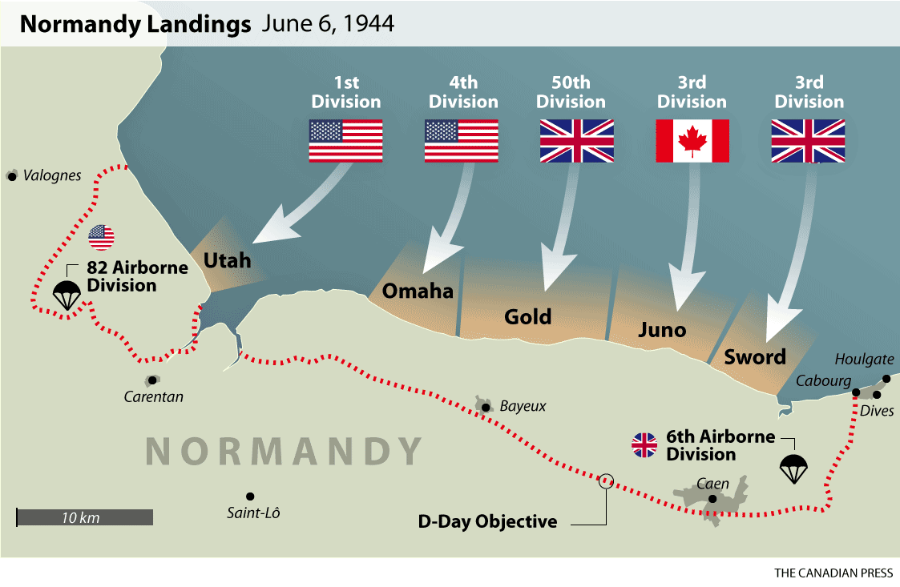

Operation Overlord (D-Day): D-Day was the name given to the Normandy invasion and liberation of western Europe from the Germans as a part of Operation Overlord. Planning for the operation began in august or May 1943. The allies wanted another front to help the Soviets and further thin out German forces. Operation Overlord is the largest amphibious assault in history, there were nearly 5000 ships and other amphibious vehicles and 11 thousand aircraft participated in the assault.
Pre-Invasion: In preparation for the assault there was a massive disinformation campaign called Operation Bodyguard trying to confuse German spies and intelligence workers when and where the attack would happen. In the south eastern part in Britain a “fake army” was built up where empty barracks, inflatable tanks, landing crafts and airplanes were stationed in order to lure the Germans in to thinking the attack would happen near Calais (nearest point between Britain and France).
At this time the Germans were not sitting idly by. General Erwin Rommel was set in charge of fortifying Hitler’s Atlantic wall. Rommel realized that the Normandy beaches looked similar to the beaches the Allies invaded in Italy 1943, making Normandy a likely target of attack. The beaches were fortified with landmines, water and tank obstacles and bunkers. He also flooded the regions behind the beach to try and prevent paratroopers (soldiers who jump from airplanes with parachutes) from landing behind.
Invasion: During the early morning of June 6th 1944, thousands of paratroopers landed behind enemy lines and started to carry out their objectives such as securing bridges and destroying artillery positions. Before this the allied had also dropped parachute bombs and speakers playing gunfire in order to confuse the Germans. Many paratroopers landed in the wrong areas with their equipment missing along with some landing in flooded fields, drowning.
By 6.30 the allies landed troops with landing crafts on the beaches. The allied had split up the beaches of Normandy in to five sectors: Utah (American), Omaha (American), Gold (British), Juno (Canadian) and Sword (British). The deadliest beach was Omaha with an estimated 2000 soldiers were wounded or dead.

Invasion plan of Normandy. Source
On June 11th the beaches were secured and there were nearly 326 thousand allies soldiers, 50.000 vehicles and hundreds of tons’ worth of equipment in France. Casualties are varied, during June 6th there are believed to be around 10 thousand allies casualties (4000 dead) and between 4000-9000 German casualties. During the whole campaign the estimates are 209 thousand allied casualties (37 thousand dead) and German casualties are estimated around 200 thousand with another 200 thousand Prisoners of War.